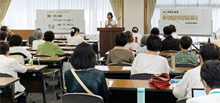

|
|
9月7日（月）13時30分より、さいたま共済会館にて、「女性と相続 ～何でも夫名義？つれあいの権利って～」と題して県内消費者団体研修会を開催、13団体47人が参加しました。
 講師の弁護士 竪十萌子さんからは、「こんな経験はありませんか」として、ふだんの生活の中に根付いている男女差による事例と、その背景となる大日本帝国憲法での女性の人権について説明され、次に、日本国憲法でようやく認められた女性の権利について具体的に話されました。それでも日本のジェンダーギャップ指数は世界で121位とG7ではダントツ最下位という現状の問題にも触れられ、憲法や法律は変わっても、依然として男女含めて意識改革が進んでいない現状が明らかになりました。誰もが安心して弱者になっても生きていける社会にするために、憲法25条と生活保護費の関係についてもきちんと理解することが大切だと話されました。最後に、長年培われた意識、社会、常識を変えることはとても大変だけど、私たちから変えていって、未来につないでいきたいと呼びかけられ、講演を終了されました。 参加者の声から（心に残ったこと）
|